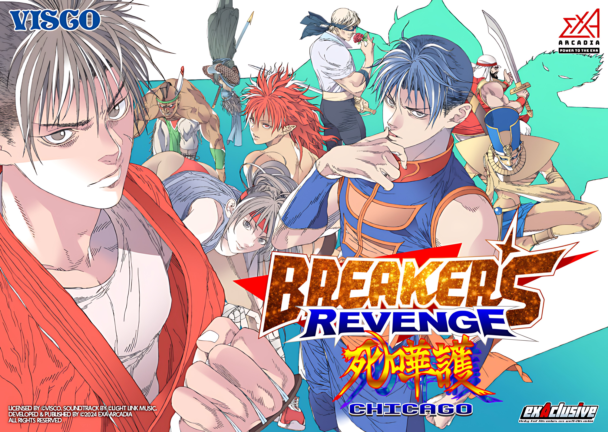

Welcome to Breakers Wiki
Breakers Revenge Wiki covers game mechanics, move lists, character guide, combos and matchups. For more detailed information and in-depth discussions, visit the Breakers Revenge Discord server.
This wiki uses standard fighting game language. For unfamiliar terms, refer to a guide, such as The Fighting Game Glossary.
Frame data is not yet available for this game. In the meantime, this wiki does provide information on advantages on hit and block for all moves.
The matchup section provides the essentials for dealing with the most common moves and gameplay situations for each character.
Introduction
Breakers Revenge, released in 1998, is a fighting game developed by Visco and published by SNK. It's the sequel to "Breakers" which came out a year earlier.


The game offers a variety of characters, each with their own unique fighting styles and special moves. It plays like other classic fighting games, focusing on combos, special moves, and flashy attacks. While it may not have reached the same fame as some others, Breaker's Revenge is beloved by retro gamers and Neo Geo fans alike.